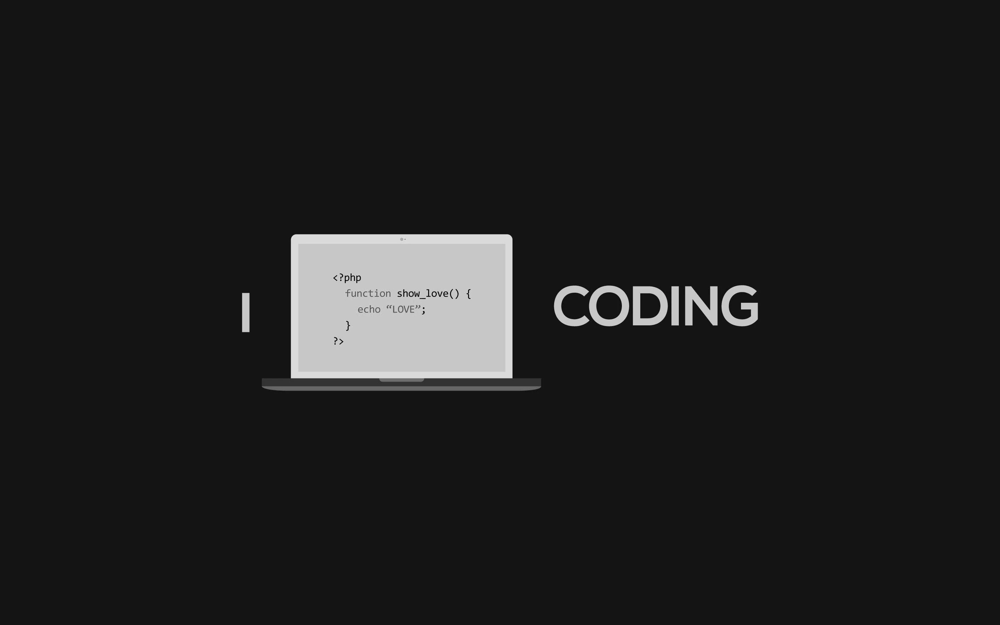

Informacione tehnologije (IT) predstavljaju jednu veliku oblast koja se relativno skoro razvila u tehnologiji. Ova oblast je vrlo kompleksna i sve više širi svoj spektar primjene u današnjem vremenu. Informacione tehnologije se mogu definisati kao proučavanje, dizajniranje, razvijanje, implementacija i upravljanje kompjuterskim informacionim sistemima. Služe za projektovanje baza podataka i njihovo upravljanje kao i za kreiranje informacionih sistema sa ciljem skladištenja, obrađivanja i distribucije velikog broja informacija IT stručnjaci omogućavaju svima koji rade sa računarima da posao obavljaju lakše, produktivnije i kvalitetnije.
IT je veoma važan za institucije državnih organa koje su nerijetko pod velikim pritiskom privatnog sektora. Naime, primjer iz pojedinih zemalja pokazuje da je privatni sektor prvi uočio značaj i neophodnost korišćenja informacionih tehnologija u poslovanju i time stekao nevjerovatnu prednost u odnosu na državne institucije. Da je privatni sektor modernizovaniji i napredniji u poslovanju nije slučaj samo na Američkom trištu i zapadu Evrope, već i iskustva sa Balkana govore u prilog tome. Dobra stvar je da inovacije privatnog sektora pružaju organima državnih institucija uvid u mnogobrojne prednosti korišćenja napredne tehnologije.


Privatni sektor se mnogo ranije okrenuo informacionim tehnologijama i mnogo je ozbiljnije shvatio da treba poboljšati poslovanje. Pa ipak studije na Balkanu kažu da je 75% stanovništva prilikom glasanja da li bi prije radilo u državnom ili privatnom sektoru ipak izabralo državni sektor. Razlog tome je što se privatni sektor okrenuo isključivo oblastima njihovog interesovanja. Državni sektor bi situaciju mogao da okrene u svoju korist primjenom informacionih tehnologija u oblastima poput poljoprivrede, zdravstva, obrazovanja, ekonomije, infrastrukture… Kako se polako izjednačava broj IT stručnjaka sa stručnjacima svih ostalih oblasti ne postoji problem u primjeni informacionih tehnologija u bilo kojoj sferi poslovanja.